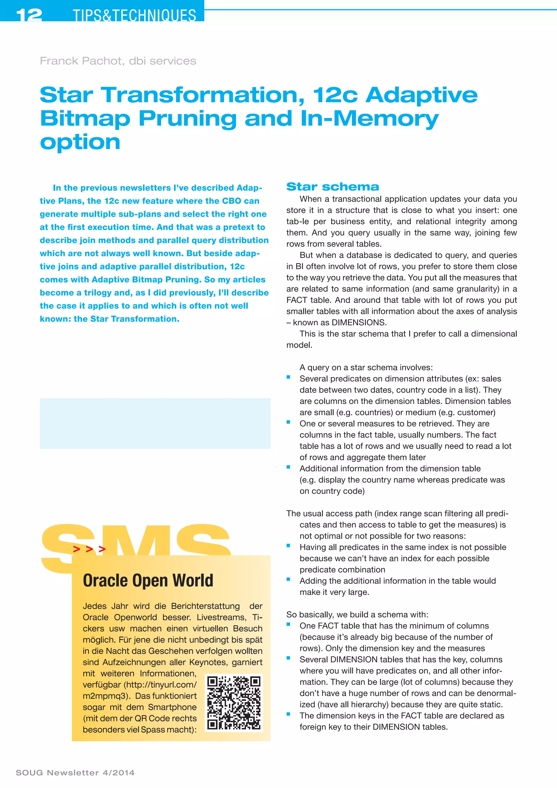
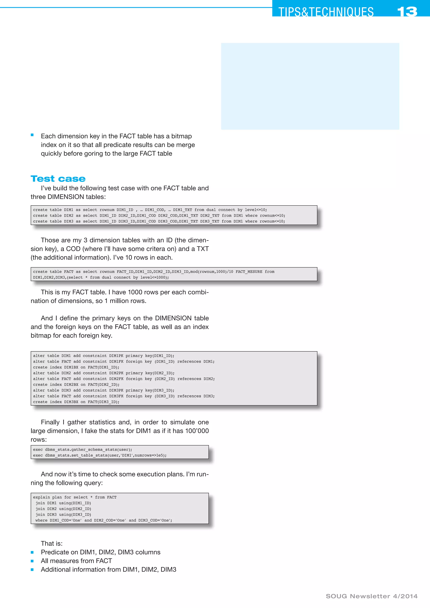
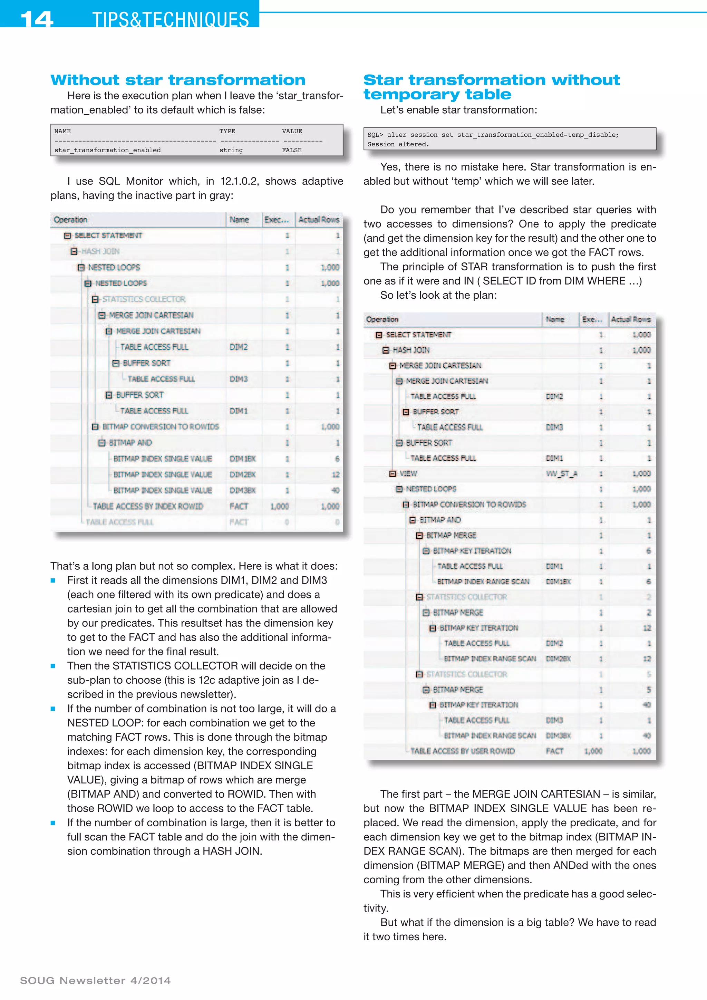
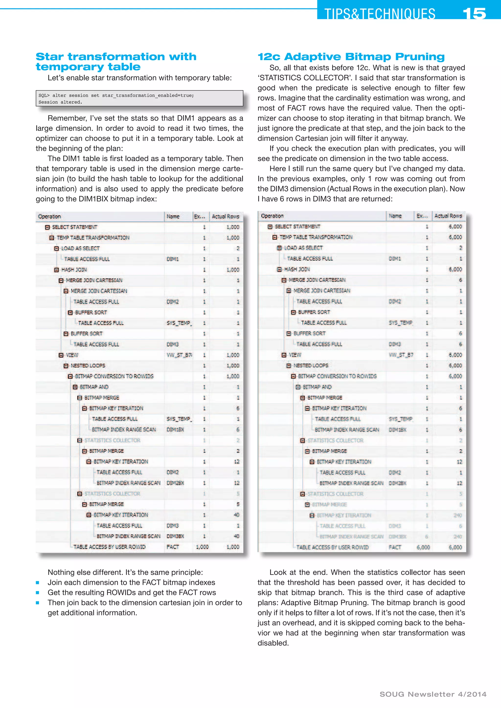
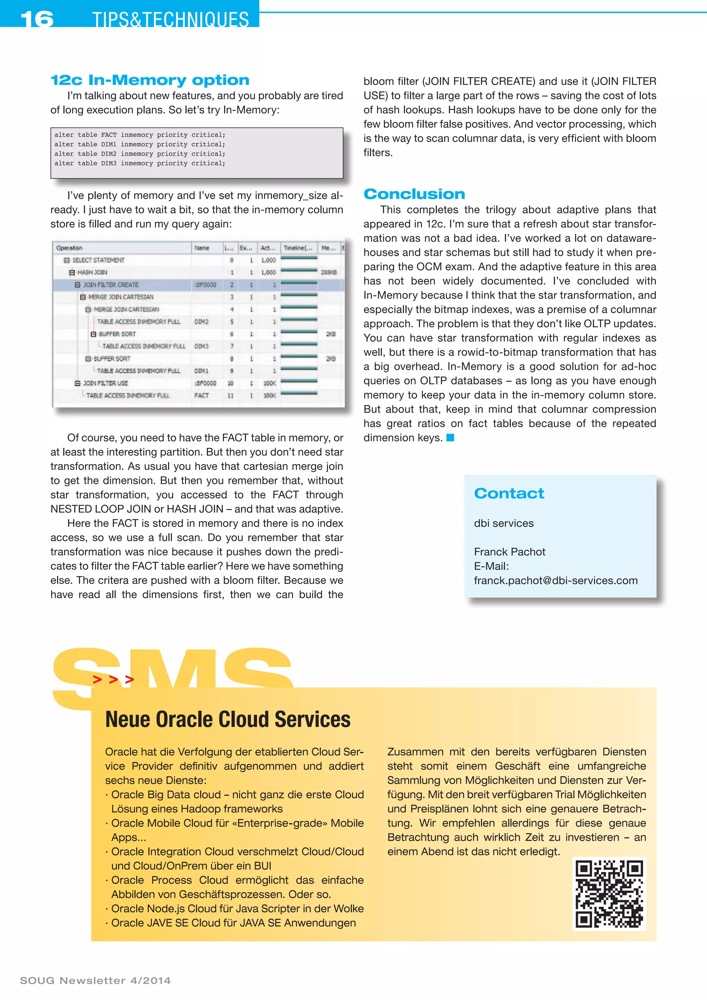

SOUG Newsletter 4/2014 · Franck Pachot
A five-page explanation of dimensional schemas and Oracle star transformation. A reproducible fact-and-dimension test case compares bitmap access with and without temporary-table transformation, demonstrates 12c adaptive bitmap pruning, and contrasts it with In-Memory scans using bloom filters.




